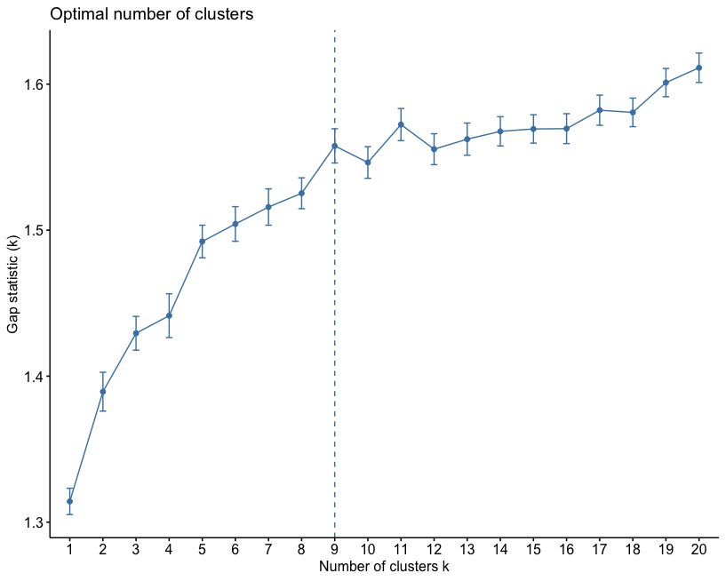

Unsupervised Clustering

Introduction
In an earlier post, I used location information to identify spatial patterns/clusters. Recall that space is, often simply 2 dimensional dataset (X,Y) coordinates. There is no reason to presume that clusters are of interest only in geographic space. Higher dimensional and non spatial datasets are of interest to planners as well. In this post, I am going to demonstrate few tried and tested methods to identify patterns in higher dimensional data about urban indicators.
Unsupervised learning works by identifying patterns in the data. The following graphic vividly illustrates the point.
Source: Booz Allen Hamilton
Data & Required Packages
In this tutorial, I am going to use different urban landscape metrics that were found using methods described in other posts, at a county level for all the 3,100 counties in the conteminous United States for the 2011 land cover data. In additon, I am going restrict my attention few of the counties classified as Large Fringe Metro counties and Medium Metro counties, by the National Center for Health Statistics using the 2013 datasets.
For this tutorial, in addition to other packages for visualisation, you will need to install and initalise factoExtra and cluster packages.
Prepare the dataset as follows. It is often necessary to scale the variables in machine learning. Conventional scaling is to subtract the mean and divide by the standard deviation. But, any appropriate scaling techniques can be used as shown below.
library(tidyverse)
library(skimr)
library(openxlsx)
library(tigris)
library(cluster)
library(factoextra)
library(here)
county_df <- here("tutorials_datasets","unsupervisedclustering","2k11_metrics_2019.csv") %>%
read_csv() %>%
mutate(FIPS = cntyfips %>% as.integer %>% formatC(width=5, flag="0"))
nchsurc_codes <- here("tutorials_datasets","unsupervisedclustering","NCHSURCodes2013.xlsx") %>%
read.xlsx() %>%
as_tibble() %>%
mutate(FIPS = `FIPS.code` %>% as.integer %>% formatC(width=5, flag="0")) %>%
dplyr::select(FIPS, CountyName = County.name, CBSA = CBSA.title, NCHSURC_code = Code2013) %>%
mutate(NCHSURC_code = NCHSURC_code %>% as.factor)
county_df <- county_df %>%
left_join(nchsurc_codes)
county_df_scaled <- county_df %>%
mutate_if(is.numeric, scale)
# county_df_scaled %>% skim()
scale2 <- function(x, na.rm = TRUE) ((x) / (max(x, na.rm=na.rm) - min(x,na.rm=na.rm)))
county_df_scaled2 <- county_df %>%
mutate_if(is.numeric, scale2)
# county_df_scaled2 %>% skim()Different clustering techniques
All clustering techniques rely on the notion of distance. It is fairly straightforward to think of geographic (eulcidean) distance \(d(i,j)\) between two points \(i:= (x_i,y_i, z_i), j:= (x_j,y_j, z_i)\) as
\[\sqrt{(x_i-x_j)^2 + (y_i -y_j)^2 + (z_i -z_j)^2}\]
But there are other types of distances that are possible as well. For example, Manhattan distance is
\[|x_i-x_j| + |y_i-y_j| + |z_i-z_j|\]
In fact distance can be any metric that satisfies
- \(d(i,j) = 0\) if and only if \(i = j\)
- \(d(i,j) \leq d(i,k) + d(j,k)\)
There are others criteria, but the above two are most important. Note that \(i\),\(j\),\(k\) can be of any dimensions. Some popular distances are Manhattan distance, \(L_p\) norm, Minkowski distance, Hamming distance, Cosine Simiarlity etc.
Partition based clustering
The K-Means algorithm is perhaps the most well known, clusters data by trying to separate samples into \(K\) groups, minimizing a criterion known as within-cluster sum-of-squares, by focusing on euclidean distance. This algorithm requires the number of clusters to be specified. It scales well to large number of samples and has been used across a large range of application areas in many different fields. This algorithm is susceptible to outliers that skew the euclidean norm. The following animation provides some indication of how the algorithm works.

The Partition around Medoids (PAM) on the other hand, is bit more robust than k-means. Instead of finding the centroids (white xs in the above animation), the algorithm finds a ‘medoid’ (a representative point that is a member of the set). Note that centroids may not be members of the cluster. As such, PAM can accept any distance metric or dissimilarity matrix, instead of calculating the distance on the fly.
In the rest of the tutorial, I am going to restrict my attention to a subset of counties (large fringe and medium metro) and a subset of variables (number of patches, mean and variance in patch areas). The following code divides the dataset into 5 clusters using K-means and PAM.
county_df_scaled_sel <- county_df_scaled %>%
filter(NCHSURC_code %in% c(2,3)) %>%
select(FIPS, n.patches, mean.patch.area, sd.patch.area)%>%
na.omit()
km.res <- county_df_scaled_sel %>%
select(-FIPS) %>%
kmeans(5, nstart = 25, iter.max=30)
pm.res <- county_df_scaled_sel %>%
select(-FIPS) %>%
pam(k = 5)
as_tibble(cbind(pam =pm.res$cluster %>% as.factor(), kmeans = km.res$cluster %>% as.factor)) %>%
table()
# kmeans
# pam 1 2 3 4 5
# 1 0 0 286 0 0
# 2 0 0 27 0 124
# 3 0 0 17 57 74
# 4 0 54 0 6 21
# 5 14 0 0 58 0From the above table, it should be apparent that the both the algorithms produce very different set of clusters. While most of the cluster 3 identified by K-means are also identified as cluster 1, half of the cluster 1 in k-means is split between clusters 3 and 5 of PAM.
Exercise
- Change the cluster numbers and other parameters
- Note that we scaled the dataset and then filtered it. This seems problematic for any number of reasons (means and variances are different for the different subsets). What if we reversed the operation, i.e. first filtering and then scaling. How do the results change?
One of the problems with the partition based methods is that we have to apriori specify the number of clusters that we intend to find. This is often problematic. But over the years, some heuristics have been developed to identify the appropriate number of clusters. One popular heuristic is called the ‘eblow’ method. The point of the eblow method is to repeat the clustering for the arbitary number of clusters and identify the number at which there is kink in the Total WSS. In the following figure, it is around 9.
county_df_scaled_sel %>%
select(-FIPS) %>%
fviz_nbclust(pam, method = "wss", k.max=20)
The idea is that after 9 clusters, the total sum of WSS does not decrease significantly for the effort that is put in.
Gap statistic is a more robust way of selecting the number of clusters. This is based on bootstrapping (repeated sampling the dataset and constructing empirical distributions).
county_df_scaled_sel %>%
select(-FIPS) %>%
fviz_nbclust(pam, method = "gap_stat", k.max=20) In this particular instance, the number of clusters suggested by the gap-stastistic and elbow method are the same.
Exercise
- Compute the ‘right’ number of clusters for both K-means and PAM. Save these into columns named
knn_clusterandpam_clusteretc. Make sure they are all stored as factors. - Note the PAM can take different distance/dissimiarlity matrix instead of a matrixof observations. Use
get_distfromfactoExtrato compute a different dissimilarity matrix and use PAM to identify clusters - CLARA is another algorithm, similar to PAM to identify clusters in large datasets. Instead of the subset of counties, use this algorithm on the full dataset.
Agglomerative Hierarchical Clustering
In this mode of clustering, each point starts out as it own cluster and then the nearest point is added to it in iterative fashion. This builds a dendogram. To determine, what nearest point is, we have to define a linkage function. The linkage function could be minimum of maximum distance between the candidate point and the candidate cluster or average to all points in the candidate cluster etc. The following animation, illustrates the point
Once this dendrogram is constructed, all that is left is is to cut it at an ‘appropriate height’ to get the clusters.
res.hc <- county_df_scaled_sel%>%
select(n.patches, mean.patch.area, sd.patch.area) %>%
get_dist(method = "pearson") %>%
hclust(method = "ward.D2") # Compute hierachical clustering
# Visualize using factoextra
# Cut in 4 groups and color by groups
fviz_dend(res.hc, k = 4, # Cut in four groups
k_colors = c("#2E9FDF", "#00AFBB", "#E7B800", "#FC4E07"),
color_labels_by_k = TRUE, # color labels by groups
rect = TRUE, # Add rectangle around groups
show_labels = FALSE
)
county_df_scaled_sel$hc_cluster <- cutree(res.hc,4) %>% as.factor()Clustering using Random Forest
While tree based weak learners are often used for ‘supervised learning’, it is possible to use them for unsupervised learning as well. The idea is construct a ‘proximity’ matrix among the observations using lots of these weak learners (trees) and use the hierarchical clustering (or any other) to identify the clusters. The trick is to simulate points from the same distribution as the ‘real data’ and then try to use random forest to predict/classify whether the points are ‘real’ or ‘simulated’. But the real use is to create the proximity matrix, which is an nxn matrix where each value is the proportion of times the ‘real’ observations \(i\) and \(j\) end up in the same terminal node.
library(randomForest)
rf.fit <- county_df_scaled_sel %>%
select(n.patches, mean.patch.area, sd.patch.area) %>%
randomForest(y = NULL, ntree = 10000, proximity = TRUE, oob.prox = TRUE)
hclust.rf <- hclust(as.dist(1-rf.fit$proximity), method = "ward.D2")
county_df_scaled_sel$rf_cluster <- cutree(hclust.rf,4) %>% as.factor()What is the point?
The point of all these classification is to see if we can find some patterns in the dataset that we can say something about. To do that we will have to examine how these cluster classification say something about the patterns within the data. One way to do it is to look back as the observations relative to the clustering.
for(clustertype in c("knn_cluster", "pam_cluster", "hc_cluster", "rf_cluster")){
g1 <-
county_df_scaled_sel %>%
select(n.patches, mean.patch.area, sd.patch.area, all_of(clustertype)) %>%
pivot_longer(-all_of(clustertype), names_to = "variable", values_to = "val") %>%
ggplot() +
geom_density(aes_string(x = "val", color=clustertype)) + # Note the use of aes_string instead of aes to account for the variable name 'clustertype' which is not a column name.
geom_rug(aes_string(x = "val", color=clustertype)) + # Note the use of quotes around val, when used with aes_string instead of aes
facet_wrap(~variable) +
xlab('Value') +
ggtitle(clustertype)
print(g1)
}


The cluster may or may not make any substantive sense. It is up to the analyst to interpret the results to draw meaningful conclusions.
Exercise
- Are there any spatial patterns of these clusters? Does visualising a map tell us much about these clusters?
- Does it matter that we used a subset of counties? What happens when we try to cluster for the entire dataset?
- What happens when we try to identify subsets in different qualitative subsets, say in non-metro counties in Pacific Northwest? Are the clusters more meaningful then?
Conclusions
Unsupervised classification and learning is a task that requires a lot of finesse, judgement, substantive expertise and is an art form. Just like any other technique, we have dealt with in the course. The only way to get better, is to constantly re-evaluate how the clusters that are identified by different algorithms are sensitive to particular choices the analyst makes and develop an intuitive understanding of the structure of the data. The clusters might also point to further investigations into anamolies that shed some light on the data generating processes. All in all, these techniques should help with getting a better handle on what we are measuring and how we measure. And then the much harder task is to make sense what these clusters are telling us substantively.
Nikhil Kaza
Professor
My research interests include urbanization patterns, local energy policy and equity